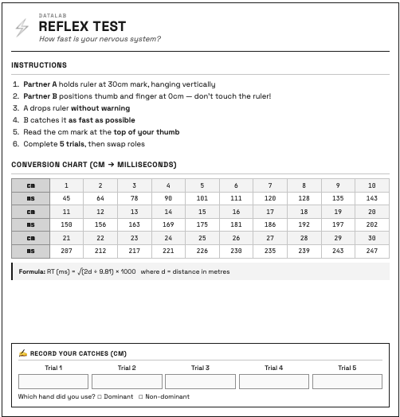

Station 1: Reflex Test

Station Overview
The Reflex Test measures how quickly your nervous system can respond to a visual stimulus. Using a simple ruler-drop task, participants catch a falling ruler and convert the distance caught to reaction time in milliseconds. This station demonstrates the practice effect — reaction times typically improve across repeated trials.
What Participants Do
- Partner A holds the ruler at the 30cm mark, letting it hang vertically
- Partner B positions thumb and finger at the 0cm mark — without touching!
- Partner A drops the ruler without warning (within 5 seconds)
- Partner B catches it as fast as possible
- Read the distance in cm at the top of your thumb
- Complete 5 trials, then swap roles
Research Questions
Do reaction times improve with practice across 5 trials?
Is there a difference between dominant and non-dominant hand reaction times?
Do individual differences (sleep, caffeine) predict reaction time?
Experimental Design
| Element | Description |
|---|---|
| Design | Within-groups (repeated measures across 5 trials) |
| IV | Trial number (1–5) |
| DV | Reaction time (milliseconds) |
| Controls | Fixed ruler position, same partner dropping |
Data Variables
| Variable | Type | Description | Range |
|---|---|---|---|
rt_hand |
Categorical | Hand used | Dominant, Non-dominant |
rt_trial1_cm – rt_trial5_cm |
Continuous | Catch distance per trial | 0–30 cm |
rt_missed |
Multi-select | Which trials were missed | Trial 1–5, No misses |
Calculated Variables
| Variable | Formula | Description |
|---|---|---|
rt_trial1_ms – rt_trial5_ms |
√(2d/g) × 1000 | RT in milliseconds |
rt_mean_ms |
Average of trials | Mean reaction time |
rt_best_ms |
Minimum of trials | Fastest reaction |
rt_improvement |
Trial 1 − Trial 5 | Practice effect (positive = improved) |
Reaction time is calculated using the physics of free fall:
\[RT_{ms} = \sqrt{\frac{2 \times distance_{cm}/100}{9.81}} \times 1000\]
A catch at 15cm ≈ 175ms reaction time
Expected Results
| Metric | Typical Range |
|---|---|
| Average RT | 150–250 ms |
| First trial | 180–250 ms |
| Fifth trial | 140–200 ms |
| Improvement | 20–50 ms faster |
- Under 150ms: Excellent reflexes
- 150–200ms: Above average
- 200–250ms: Average
- Over 250ms: Slower than average
Suggested Analyses
Primary analysis:
- Paired t-test comparing Trial 1 vs Trial 5
Descriptive statistics:
Exploratory analyses:
- Correlate sleep hours with mean RT
- Compare dominant vs non-dominant hand (if both recorded)
R Code Starter
# Load data
datalab <- read_csv("datalab_data.csv")
# Convert cm to ms using physics formula
cm_to_ms <- function(cm) {
sqrt(2 * (cm / 100) / 9.81) * 1000
}
# Calculate RT in milliseconds
datalab <- datalab |>
mutate(
rt_trial1_ms = cm_to_ms(rt_trial1_cm),
rt_trial2_ms = cm_to_ms(rt_trial2_cm),
rt_trial3_ms = cm_to_ms(rt_trial3_cm),
rt_trial4_ms = cm_to_ms(rt_trial4_cm),
rt_trial5_ms = cm_to_ms(rt_trial5_cm)
)
# Mean RT across trials
datalab <- datalab |>
rowwise() |>
mutate(rt_mean_ms = mean(c(rt_trial1_ms, rt_trial2_ms, rt_trial3_ms,
rt_trial4_ms, rt_trial5_ms), na.rm = TRUE))
# Paired t-test: Trial 1 vs Trial 5
t.test(datalab$rt_trial1_ms, datalab$rt_trial5_ms, paired = TRUE)
# Visualise practice effect
library(tidyr)
library(ggplot2)
datalab |>
select(participant_id, rt_trial1_ms:rt_trial5_ms) |>
pivot_longer(cols = -participant_id,
names_to = "trial",
values_to = "rt_ms") |>
mutate(trial = parse_number(trial)) |>
ggplot(aes(x = trial, y = rt_ms, group = participant_id)) +
geom_line(alpha = 0.3) +
geom_smooth(aes(group = 1), method = "lm", se = TRUE, colour = "#275882") +
labs(x = "Trial", y = "Reaction Time (ms)",
title = "Practice Effect in Reflex Test")Connection to Other Concepts
This station demonstrates:
- Within-Groups Design — same participant across trials
- Practice Effect — improvement through repetition
- Paired t-test — comparing two related measurements
Tips for Facilitators
- Ensure the ruler is held at exactly 30cm and hangs straight
- Partner A should drop without warning but within 5 seconds
- Read the cm mark at the top of the thumb, not where fingers touch
- Record any missed catches — these are still informative data
- If equipment issues arise, note them in the comments field